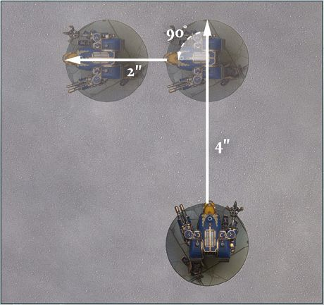
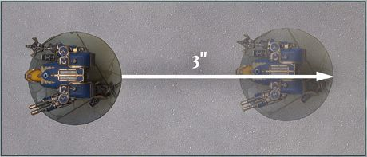

Titans
The Titan Detachment type represents the towering god-engines of the Mechanicum and other war machines or esoteric beasts of similar size. To reflect their unique nature, the following section covers additional rules that apply to Titans during the course of a game. Some of the rules reference the way a Titan interacts with various types of terrain - see page 66 for more details on terrain.
Titans in the Movement Phase
Moving Titans
When moving, Titans must move in a straight line. Any such model must move within its Front Arc and cannot change its facing, even if it moves at a diagonal.
At any point during its movement, a Titan may make up to 1 turn per phase, unless otherwise stated.
When a Titan turns, it may turn up to a maximum of 90°. A Titan turns by pivoting on the spot around its central point.
Titans can move in their Rear Arc if they wish to but, if they do so, they move slower. For every 1" a Titan moves in its Rear Arc, it counts as having moved 2". The Titan's facing does not change. If it is unclear which Arc a Titan is moving in (for example, if the Titan is sidestepping), then it is assumed they are moving in their Rear Arc and thus move slower.

LIR75.1: Example of a Titan turning during a move

LIR75.2: When moving in its Rear Arc, the Titan's move is measured from the back of its base
Titans and Obstacles
Titans do not reduce their movement when moving over an Obstacle. In addition, if a Titan ends its movement on top of an Obstacle, the Obstacle is destroyed and removed from the battlefield.
Engaging Structures
Titan models can end their move in base contact with a Structure, even if not issued with a Charge Order, and even if it is Garrisoned by one or more enemy Detachments. A Titan in base contact with a Structure counts as Engaged (but not Engaged & Pinned) with that Structure - if there are Detachments inside the Structure it is not Engaged with them. Similarly, the Detachments within are not Engaged with the Titan.
Structures and Engaged Titans
While Titans cannot effectively fight Infantry garrisoned within a Structure, they can attempt to destroy the Structure itself.
Once per round, when a Titan is activated in either the First Fire or Advancing Fire stage of the Combat phase, it may attempt to destroy a single Structure it is Engaged with, using the Titan itself as a wrecking ball. When it does so, the Titan may also use each Wrecker weapon it has to target the same Structure or a different Structure it is also Engaged with. The controlling player must state which Structure they are attempting to destroy with the Titan and which they are attempting to destroy with their Wrecker weapon(s), applying the relevant AP modifiers to that Structure only.
When a Titan attempts to destroy a Structure, the opposing player makes a Save roll for the building, applying any relevant modifiers. When attempting to destroy a Structure with the Titan itself (but not its Wrecker weapons), an AP of D6-1 (to a minimum of 1) is applied to the Save roll. If the result of the roll is less than the Structure's Armour Save characteristic, the Structure suffers D3 Wounds, plus an additional 1 Wound if the starting Wound characteristic of the Titan was 5 or more, or an additional 2 Wounds if the starting Wound characteristic of the Titan was 7 or more.
Attempting to destroy a Structure with a Wrecker weapon follows the rules described in the Wrecker trait (see page 85) instead.
A Titan that attempts to destroy a Structure may still fire its weapons as normal. It can attempt to destroy a Structure before or after firing its weapons.
Titans in the Combat Phase
Titans function much the same as other Detachments during the Combat phase, with two notable exceptions: split fire and obstructions (see page 56 for Obstructions).
Split Fire
Titan weapons are colossal, capable of unleashing vast torrents of fire over wide swathes of the battlefield. To represent this, when a Titan's controlling player is choosing targets for the Titan they may always choose different targets for each of its weapons, and may also split the Dice value of the weapon across different Detachments. In other words, it may choose a different enemy Detachment as a target for each of its weapons and/or may split the Dice of a weapon across multiple targets.
When splitting Dice from the same weapon across different target Detachments, the controlling player must pick a primary target and assign at least one Dice to that target - the primary target cannot be a Structure. Any additional Dice can only be assigned to Detachments within 4" of the primary target - these Detachments are referred to as secondary targets.
For example, a Warhound Titan has two plasma blastguns, each of which has a Dice value of 3. The controlling player wishes to target a solitary Leman Russ battle tank, a squadron of three Leman Russ battle tanks and a wounded enemy Warhound Titan. They declare that they are assigning one Dice from each plasma blastgun to the solitary Leman Russ as the primary, one Dice each to the Warhound and one Dice each to the Detachment of three Leman Russ as secondary targets, both of which are within 4" of the primary target.
All Dice must be assigned before any Hit rolls are made. Once all Dice have been assigned, the Titan resolves its shooting against its targets as normal, taking the number of Dice assigned to each Detachment as the Dice value of the firing weapon for that attack.
Destroying a Titan
The death of a Titan is a deadly spectacle. When a Titan is destroyed, but before it is removed from the battlefield, it explodes. Roll a D6 for each model within 3" of the Titan if the Titan had fewer than 6 starting Wounds, or within 5" of the Titan if the Titan had 6 or more starting Wounds. On a 4+, that model's Detachment suffers a Hit with an AP value of -1, or -2 if the Titan had a starting Wounds characteristic of 6 or more. Only models within the specified distance of the Titan may be removed as casualties.
Once this had been resolved, remove the Titan from the battlefield as normal.